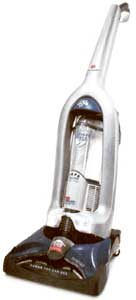
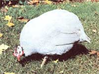

Flea And Tick Control
Keep you and your pets happy with the least-toxic control methods, including preventive maintenance, tackling ticks, light traps, how to remove a tick, a fowl approach and a new generation of pesticides.
By Lynn Keiley
August/September 2002
Have you scratching your head?
Keep you and your pals happy with these least-toxic methods.
It's a barely noticeable sensation, just a whisper of a tickle. You reach to brush away what you expect will be nothing mo re than a fly or stray piece of hair, only to discover a blood-sucking intruder seeking its next meal?on you. What's disconcerting isn't the discovery of that first flea or tick, but the creepy crawly feeling that if you've found one, many more are lurking nearby to take its place.
If you have animals-and what's a happy homestead without them??fleas and ticks are an uncomfortable fact of life for you and your pet. More than a nuisance, fleas and ticks can transmit a host of pathogens and skin diseases to humans and their furry counterparts. But you don't have to risk disease or watch your pets suffer. With a little diligence and the help of some new pest controls, you can get the upper hand during flea-and-tick season.
There are more than 3,000 different species of flea, but here in North America the most common one is Ctenocephalides felis, the cat flea. Despite their name, these fleas are just as happy to reside on your dog.
A flea's life span goes through four stages. Research has shown about 5 percent of the fleas that infest your home are adults. The bulk of indoor flea populations are made up of pupae (10 percent), larvae (35 percent) and eggs (50 percent). Many common pesticides used to eradicate these pests kill only adult fleas, leaving 95 percent of the flea problem behind to leap up time and again.
A female flea can lay up to 50 eggs each day. Before laying eggs, the flea must find a blood meal?not an easy quest. Fleas have poor eyesight and rely primarily on air currents and carbon dioxide to locate hosts. As your family pet trots by, the tenacious flea jumps up and down, sometimes thousands of times, before it hitches a tide. Once on board, the flea secretes saliva onto the target area to soften the skin and make the blood flow readily. It's this saliva, not the actual bite, that causes the allergic reactions in pets and humans.
After her blood meal, the flea begins laying eggs on her host. Pets usually remove some of the eggs while grooming themselves; others fall off as the animal moves from place to place. In about 10 days, the larvae emerge.
Anyone who has ever suffered through a severe flea infestation knows it's a situation that can drive even the most mild-mannered environmentalist to contemplate reaching for a hard-core pesticide arsenal. But that's only a short-term solution. Besides being ineffective in the long run, those chemicals contribute to indoor air pollution and subject you and your family to residual exposure for weeks or even months after they're applied. This can be particularly dangerous for young children, who may crawl on treated carpets and floors. Their developing bodies are more sensitive than adults to the effects of pesticides.
Collars infused with pesticides emit a constant stream of vapors into the air whether or not there are fleas present, and both you and your pet constantly breathe these vapors. According to one study, using pesticides in the home, including flea collars, may increase the risk of childhood cancer. In addition, pesticides can irritate your pet's skin.
Herbal remedies aren't necessarily the solution either, says Michael Dryden, professor of veterinary parasitology at Kansas State University in Manhattan, Kansas. Considered a leading expert on flea control, Dryden says natural flea preventives, such as adding garlic to the pet's food or using the aromatic oils of cedar, lavender, mint and rosemary, are ineffective. Some herbal treatments, such as citrus extracts or pennyroyal, can be toxic to pets and humans.
"Both dogs and cats have died as the result of accidental ingestion of pennyroyal oil," Dryden says. "Pets can ingest the oil while grooming themselves, and the oil is toxic to their liver and kidneys." And feeding animals brewer's yeast, another popular folk remedy, may have opposite the intended effect. "We actually use brewer's yeast to feed fleas when we're raising them for experiments," Dryden says. "They love it. The yeast increases their numbers by 40 to 50 percent."
Light traps
Ever go away on vacation and return to find your home infested with fleas? While your pet was away, the fleas were at play, still laying eggs, eating organic debris on the carpet, multiplying exponentially and waiting eagerly for their next blood meal. But you can put flea control on autopilot while you're away with a simple light trap.
Hang a lightbulb 6 to 12 inches above a pan of soapy water or a board covered with sticky paper (like duct tape) on the floor. In the absence of a warm body, fleas will be attracted to the heat of the bulb and hop to their soapy or sticky grave.
PREVENTIVE MAINTENANCE
The good news is prevention is the best approach to flea control. The bad news is you'll have to vacuum and vacuum and vacuum.
"You can eliminate up to 50 percent of flea eggs in a single pass with a vacuum," Dryden says. His experiments done on nylon carpets have shown vacuuming provides the same level of control at the pupal stage as permethfin, a widely used synthetic pesticide. Dryden recommends vacuuming carpets at least once a week or as often as every day during peak flea season, usually middle to late summer. Pay special attention to any areas where your pets may lie and remember to clean underneath sofas and chairs. Wash pet bedding regularly and vacuum cushions, pillows and between crevices on upholstered furniture. Dryden suggests removing the vacuum bag weekly and tossing it in an outdoor trash container.
You won't want to allow a flea-infested Fluffy or Fido into your freshly cleaned home, so treat them to an occasional shampoo. No need to lather them up with a pesticideinfused potion: Plain soap and water usually will drown the fleas. just work up a good suds and allow it to stand for a few minutes before thoroughly rinsing your pet.
Flea combs are another good method for controlling mild infestations of adult fleas. These combs have tightly spaced teeth that comb out fleas and their manure (which serves as food for the larvae), but still allow hair to pass through. Dip the comb into soapy water to dislodge and drown the fleas.
Pets usually enjoy the extra attention, and by combing regularly, you'll be able to monitor the flea population and spring into action if numbers begin to swell. Outdoors, fleas are highly susceptible to fluctuations in temperature and moisture. They like damp environments, but they're also vulnerable to drowning. Mow infested lawn areas short, and allow them to dry out during the heat of summer if possible. Dryden says fleas are found most often in moist, shaded areas such as under porches and around dog pens. He says to use your garden hose to give the shady areas a good flooding. "Run the hose until you have mud puddles and you'll drown the fleas."
TACKLING TICKS
Ticks rank right up there with bats, snakes and spiders as creatures that elicitfear and disgust at the mete mention of their name. While most of these creepy crawlers have beneficial characteristics, ticks truly deserve to be given a wide berth. These blood-sucking parasites are carriers of several diseases, most notably Lyme disease. First appearing in the Northeast in the late 1970s, it is slowly making its way along riverbanks in MidAtlantic states toward the Midwest.
Frequent vacuuming controls fleas effectively. Toss out the cleaner bag once a week so it doesn't become a fleabag hotel. Ticks belong to the class Arachnida, which counts mites, spiders and scorpions among its members. There are more than 850 species of tick. Their ravenous appetite for blood enables them to transmit diseases such as Rocky Mountain spotted fever; ehrlichiosis, a sometimes-deadly disease with flulike symptoms; tularemia, which causes skin sores; and babesiosis, a disease similar to malaria. Just last year, the Centers for Disease Control and Prevention announced that a new tick-borne disease, Powassan encephalitis, had appeared in New England. Some scientists say there may be other tick borne illnesses that haven't been identified.
Infinitely patient creatures, ticks make their way onto the edges of leaves and branches, then stretch out their legs and hitch a ride on a passing host. Deer and mice are among their favorite means of transportation. After they've found their meal ticket, ticks wander on their hosts' bodies until they can find a suitable place to dig in and feed. A female tick will feed for three days to a week and increase as much as 200 times in weight before she's had her fill. Once satiated, she falls to the ground where she lays 1,500 to 2,000 eggs. Her progeny emerge and begin the cycle all over again. Many ticks, particularly those that infest dogs, are known as threehost ticks. with each stage of life larva, nymph and adult?the tick feeds, drops off and transforms, then moves on to another host.
If you find yourself compelled to venture into areas likely to be infested with ticks, cover up with lightcolored clothing so you can see ticks easily and pick them off before they find their way to your skin. Tuck long-sleeve shirts into long pants tucked into socks to eliminate entry points. Check for ticks regularly while outdoors.
Once you're indoors, strip off your clothing and toss it into the washer. Shower, then inspect yourself thoroughly (or invite someone to do it for you), paying special attention to your back, underarms and areas covered by hair
You can identify heavily infested areas around your home by making a tick drag. Attach a couple of yards of white flannel to a long stick, then sweep the cloth along suspected areas of your yard. Those ticks that have been waiting so patiently with outstretched arms will ding to the cloth, where you'll be able to spot them easily. Drop the cloth into a pail of soapy water to drown the ticks you've snared.
Create the conditions ticks abhor by keeping vegetation around your home cut short, so summer sun and breezes can keep your yard dry. Studies have shown removing leaf litter under shrubs and trees can also significantly reduce tick populations. Sprinkling diatomaceous earth-the tiny sharp-edged skeletons of sea creatures called diatoms?onto your pet's bedding works well to kill any fleas or ticks that fall off. Diatomaceous earth, which is available at most garden centers, dries out the bodies and eggs of fleas and ticks, killing them.
A FOWL APPROACH
Free-range chickens, turkeys and guineas will feed on ticks and other pests, such as grasshoppers, Japanese beetles and mosquitoes. Guineas in particular are relentless insect-eaters. The Guinea Fowl Breeders Association ( www.gfba.org ) reports 65 percent of its members have noticed radical declines in tick populations after they began keeping guineas. (For information on raising guineas, read Gardening with Guineas, by Jeannette S. Ferguson ). Follow flea-elimination procedures to keep tick numbers under control: Vacuum floors and launder bedding frequently. Inspect pets regularly and remove any ticks you find. Flea combs will catch ticks as long as the critters haven't attached themselves to your pet's skin. If you find a tick that's already attached, remove it carefully using tweezers. (See "How to Remove a Tick.")
A New Generation of Flea and Tick Pesticides
In the past when fleas and ticks got seriously out of control, there was little choice but to flood your home with toxic pesticides. One of the most widely used flea controls, chlorpyrifos (used in Dursban and many other products) was on the market for more than 35 years before it was finally withdrawn from use in indoor foggers and pet shampoos. Other uses were restricted because the Environmental Protection Agency concluded chlorpyrifos was associated with chronic neurobehavioral effects and multiple-chemical sensitivity.
Fleas and ticks have become resistant to most pesticides used against them, prompting companies to continually develop new products, to which the pests eventually also develop resistance. The newest generation of flea-control pesticides became available in the mid-1990s. Some of these products act as longterm controls by preventing fleas from laying viable eggs. Others are low-toxicity pesticides you apply once a month between your pet's shoulders to kill fleas quickly and steadily for a period of several weeks. Thus far, these new pesticides appear less toxic than chlorpyrifos, although it's worth remembering it took 35 years for the problems with chlorpyrifos to become apparent.
Though these are chemical controls, Michael Dryden, professor of veterinary parasitology at Kansas State University in Manhattan, Kansas, says they're relatively safe and far superior to what's been used in the past. Although some topical liquid treatments can leave behind pesticide residues where pets lie, the toxicity is below what the EPA describes as the "No Observed Effect Level." Most of these products are available only through veterinarians. Less expensive overthe-counter products are available, but their effectiveness varies widely. Some, such as permethrin, are toxic to cats.
Here are some of the newer products you might want to consider:
Lufenuron?Marketed under the brand-name Program, lufenuron is a pill you give your dog once a month (other formulations are available for cats). When they bite into the animal, female fleas are exposed to the insecticide, which prevents their eggs from developing. Although rare, adverse reactions to lufenuron can include vomiting, diarrhea and loss of appetite.
Imidacloprid?Sold as Advantage, this treatment is applied between the animal's shoulders and disperses over its body over several hours. Avoid petting the animal for 24 hours after application. Dryden's research has shown Advantage kills more than 97 percent of fleas inside the home for at least 28 days. Fipronll?Sold under the brandname Frontline, this is another spot-on treatment. It mixes with the oils in your pet's skin and settles in the sebaceous glands, where it continues to be effective for a month or more. Found by Dryden to be more than 98 percent effective in controlling fleas, fipronil also kills ticks. Selamectin?A new topical liquid treatment sold as Revolution, selamectin is labeled for control of fleas, ticks, heartworm, roundworm and hookworm in cats.
Use any of these products sparingly. Dryden says fleas and ticks inevitably will develop some resistance, but when you combine mechanical methods (vacuuming, washing bedding) and judicious use of spot-on treatments, the process will be slowed.
How to Remove a Tick
If you find a tick attached to your skin, don't panic. It usually takes eight to 48 hours for a tick to transmit diseases after it's dug in. The absolute worst thing you can do is squeeze its body with your fingers, which forces the contents of the tick's stomach into your bloodstream. Forgo the old advice to coat the tick with petroleum jelly or burn it with a match to get it to release its grip: These methods are ineffective. Instead, use tine-point tweezers to grasp the tick by the head, getting as close to the skin as possible. Pull slowly and gently to remove the tick, then clean the bite wound and wash your hands and tweezers.
|
There's no need to use pesticide-infused potions on your pooch. A good soak in mild soap and water will leave Fido flea-free. |
 You'll be glad to have guineas around the homestead. Besides their love of grasshoppers and other pests, they also have an enormous taste for ticks. |
|
|
 |
 |
|